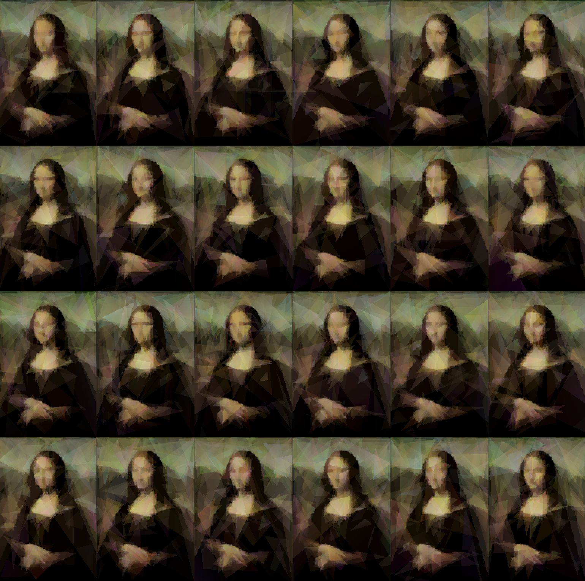

Try it live in your browser! (requires WebGPU support)

A few years ago I wrote VkLisa, a GPGPU genetic algorithm (using Vulkan compute shaders) that tried to approximate images using semi-transparent triangles. The idea was simple: maintain a population of candidate solutions, each being a collection of triangles, and evolve them through selection, crossover, and mutation. It worked, sort of. The results were recognizable but convergence was painfully slow and the final quality left much to be desired.
The core issue with genetic algorithms for this problem is that crossover is almost always destructive. A good solution is a delicate arrangement of overlapping triangles where order, position, color, and opacity all work together. Splicing two parents together almost invariably ruins this balance. What you really want is to take a single good solution and make small, careful adjustments to it — which is exactly what simulated annealing does.
The algorithm is straightforward: start with a random arrangement of triangles, and on each iteration, randomly mutate one triangle. Render the result, compare it to the target image, and decide whether to keep the change. If the new image is closer to the target, always accept. If it's worse, accept it with a probability that decreases over time — this is the "temperature" cooling schedule that lets the algorithm escape local minima early on while converging to fine details later.
The temperature follows an exponential cooling schedule, starting at 1.0 and decaying to a near-zero final temperature:
{% call macros.code("wgsl", source=src_anneal) %} // Temperature: exponential cooling — T = FINAL_TEMP^(iteration/MAX_ITERATIONS) // Equivalent to geometric cooling with rate = FINAL_TEMP^(1/MAX_ITERATIONS) let temperature = exp(log(FINAL_TEMP) * f32(iteration) / f32(MAX_ITERATIONS)); {% endcall %}The accept/reject decision uses the classic Metropolis criterion: always accept improvements, and accept worse solutions with probability e-Δ/T:
{% call macros.code("wgsl", source=src_anneal) %} if new_score <= old_score { accept = true; } else { let delta = f32(new_score) - f32(old_score); let effective_temp = max(temperature * 5000.0, 0.001); let prob = exp(-delta / effective_temp); let r = rand_f32(&rng); if r < prob { accept = true; } } {% endcall %}Each triangle is represented by 16 floats: 3 vertex positions (6 floats), 3 per-vertex RGB colors (9 floats), and a shared alpha value. On each iteration, one triangle is randomly selected and one of five mutation types is applied:
Vertex nudge — picks one of the three vertices and shifts its x/y position by a random offset proportional to the current temperature. Early on this allows large repositioning; late in the run it becomes sub-pixel fine-tuning.
Color mutation — picks one vertex's color and either nudges a single channel, or blends it toward a color sampled from the target image. The palette sampling is key: it biases the search toward colors that actually appear in the target, dramatically speeding up convergence.
{% call macros.code("wgsl", source=src_anneal) %} // Mutate one vertex's color: 50% palette sample, 50% random nudge let vertex = rand_u32(&rng) % 3u; let c_off = t_off + 6u + vertex * 3u; let use_palette = (rand_u32(&rng) & 1u) == 0u; if use_palette { let sample_x = rand_u32(&rng) % IMG_W; let sample_y = rand_u32(&rng) % IMG_H; let sampled = textureLoad(target_tex, vec2Alpha mutation — adjusts the shared opacity of the triangle, clamped between 0.02 and 0.3. This is important because the right opacity lets triangles layer to produce smooth gradients.
Swap order — picks two triangles and swaps their draw order. Since triangles are alpha-blended front-to-back, the order they're drawn in matters. This mutation lets the algorithm discover that, say, a background triangle should be drawn before a detail triangle on top of it.
Randomize — completely replaces a triangle with a new random one. This is the most disruptive mutation and acts as a way to escape deep local minima. The new triangle is biased toward being small (the radius is squared-random), and its colors are sampled from the target image half the time.
All mutations scale with temperature via a mutation_strength parameter, so the search naturally
transitions from coarse exploration to fine refinement.
The expensive part is rendering and scoring. Each iteration requires rasterizing all triangles and then comparing every pixel against the target. This is a perfect fit for the GPU: the triangle rasterization uses a standard render pipeline with alpha blending, and the scoring is a compute shader that runs a per-pixel error calculation with workgroup-local reduction to minimize atomic contention.
To maximize throughput, 24 independent SA instances run in parallel on a 6×4 grid, each working on its own copy of the triangle set. The render pass draws all instances in a single draw call by encoding the instance ID into the vertex index, and each instance's triangles are positioned into its grid cell in the vertex shader:
{% call macros.code("wgsl", source=src_triangles) %} // Which SA instance does this triangle belong to? let instance = tri_global / params.num_triangles; let tri_local = tri_global % params.num_triangles; // Compute grid cell position let grid_col = instance % params.grid_cols; let grid_row = instance / params.grid_cols; // Convert from [0,1] triangle coords to pixel coords within the grid cell, // then to NDC [-1,1] across the full output texture let pixel_x = f32(grid_col * params.img_w) + vx * f32(params.img_w); let pixel_y = f32(grid_row * params.img_h) + vy * f32(params.img_h); {% endcall %}The iteration loop also fuses adjacent compute passes to minimize GPU pass transitions — the score, decide, and next-iteration mutate dispatches share a single compute pass, bringing it down to 2 pass transitions per iteration instead of 4.
The whole thing is built with Bevy and compiles to WebAssembly + WebGPU, so you can run it directly in your browser. The source code is on GitHub.
{% endblock %}